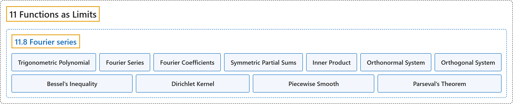

11.8 Fourier series
Classification

Glossary
| Term | Definition | 中文翻译 | Source |
|---|---|---|---|
| 11.8 Fourier series 傅里叶级数 |
(No definition) | （无定义） | Lebl, 2026, section 11.8 |
| Trigonometric Polynomial 三角多项式 |
"A trigonometric polynomial is an expression of the form \(a_0 + \sum_{n=1}^N \bigl(a_n \cos(nx) + b_n \sin(nx) \bigr)\), or equivalently, thanks to Euler’s formula (\(e^{i\theta} = \cos(\theta) + i \sin(\theta)\)): \(\sum_{n=-N}^N c_n e^{inx}\)." | 三角多项式是形如 \(a_0 + \sum_{n=1}^N \bigl(a_n \cos(nx) + b_n \sin(nx) \bigr)\) 的表达式，借助欧拉公式（\(e^{i\theta} = \cos(\theta) + i \sin(\theta)\)），等价地写成 \(\sum_{n=-N}^N c_n e^{inx}\)。 | Lebl, 2026, section 11.8 |
| Fourier Series 傅里叶级数 |
"We now take limits. The series \(\sum_{n=-\infty}^\infty c_n \, e^{inx}\) is called the Fourier series and the numbers \(c_n\) the Fourier coefficients." | 现在取极限。级数 \(\sum_{n=-\infty}^\infty c_n \, e^{inx}\) 称为傅里叶级数，数 \(c_n\) 称为傅里叶系数。 | Lebl, 2026, section 11.8 |
| Fourier Coefficients 傅里叶系数 |
"The series \(\sum_{n=-\infty}^\infty c_n \, e^{inx}\) is called the Fourier series and the numbers \(c_n\) the Fourier coefficients." | 级数 \(\sum_{n=-\infty}^\infty c_n \, e^{inx}\) 称为傅里叶级数，数 \(c_n\) 称为傅里叶系数。 | Lebl, 2026, section 11.8 |
| Symmetric Partial Sums 对称部分和 |
"In light of this, define the symmetric partial sums \(s_N(f;x) := \sum_{n=-N}^N c_n \,e^{inx}\)." | 据此，定义对称部分和 \(s_N(f;x) := \sum_{n=-N}^N c_n \,e^{inx}\)。 | Lebl, 2026, section 11.8 |
| Inner Product 内积 |
"Let \(f\) and \(g\) be complex-valued Riemann integrable functions on \([a,b]\) and define the inner product \(\langle f , g \rangle := \int_a^b f(x) \overline{g(x)} \, dx\)." | 设 \(f\) 与 \(g\) 是 \([a,b]\) 上黎曼可积的复值函数，定义内积 \(\langle f , g \rangle := \int_a^b f(x) \overline{g(x)} \, dx\)。 | Lebl, 2026, section 11.8 |
| Orthonormal System 规范正交系 |
"Let \(\{ \varphi_n \}_{n=1}^\infty\) be a sequence of integrable complex-valued functions on \([a,b]\). We say that this is an orthonormal system if \(\langle \varphi_n , \varphi_m \rangle = \int_a^b \varphi_n(x) \, \overline{\varphi_m(x)} \, dx = \begin{cases} 1 & \text{if } n=m, \\ 0 & \text{otherwise.} \end{cases}\)" | 设 \(\{ \varphi_n \}_{n=1}^\infty\) 是 \([a,b]\) 上可积复值函数的序列。若 \(\langle \varphi_n , \varphi_m \rangle = \int_a^b \varphi_n(x) \, \overline{\varphi_m(x)} \, dx = \begin{cases} 1 & \text{if } n=m, \\ 0 & \text{otherwise.} \end{cases}\)，则称它是规范正交系。 | Lebl, 2026, Definition 11.8.7 |
| Orthogonal System 正交系 |
"If we only require that \(\langle \varphi_n , \varphi_m \rangle = 0\) for \(m \neq n\), then the system would be called an orthogonal system." | 若只要求当 \(m \neq n\) 时 \(\langle \varphi_n , \varphi_m \rangle = 0\)，则该函数系称为正交系。 | Lebl, 2026, Definition 11.8.7 |
| Bessel’s Inequality 贝塞尔不等式 |
"Suppose \(f\) is a Riemann integrable function on \([a,b]\). Let \(\{ \varphi_n \}_{n=1}^\infty\) be an orthonormal system on \([a,b]\) and suppose \(f(x) \sim \sum_{n=1}^\infty c_n \varphi_n(x)\). Then \(\sum_{n=1}^\infty \lvert c_n \rvert^2 \leq \int_a^b \lvert f \rvert^2 = \lVert f \rVert_2^2\)." | 设 \(f\) 是 \([a,b]\) 上的黎曼可积函数，\(\{ \varphi_n \}_{n=1}^\infty\) 是 \([a,b]\) 上的规范正交系，且 \(f(x) \sim \sum_{n=1}^\infty c_n \varphi_n(x)\)，则 \(\sum_{n=1}^\infty \lvert c_n \rvert^2 \leq \int_a^b \lvert f \rvert^2 = \lVert f \rVert_2^2\)。 | Lebl, 2026, Theorem 11.8.9 |
| Dirichlet Kernel 狄利克雷核 |
"Let the Dirichlet kernel be \(D_N(x) := \sum_{n=-N}^N e^{inx}\)." | 令狄利克雷核为 \(D_N(x) := \sum_{n=-N}^N e^{inx}\)。 | Lebl, 2026, section 11.8 |
| Piecewise Smooth 分段光滑 |
"A function \(f \colon [a,b] \to \mathbb{C}\) is continuous piecewise smooth if it is continuous and there exist points \(x_0 = a < x_1 < x_2 < \cdots < x_k = b\) such that for every \(j\), \(f\) restricted to \([x_j,x_{j+1}]\) is continuously differentiable (up to the endpoints)." | 若函数 \(f \colon [a,b] \to \mathbb{C}\) 连续，且存在点 \(x_0 = a < x_1 < x_2 < \cdots < x_k = b\)，使得对每个 \(j\)，\(f\) 在 \([x_j,x_{j+1}]\) 上的限制（直到端点）连续可微，则称 \(f\) 是连续分段光滑的。 | Lebl, 2026, section 11.8 |
| Parseval’s Theorem 帕塞瓦尔定理 |
"Let \(f\) and \(g\) be \(2\pi\)-periodic functions, Riemann integrable on \([-\pi,\pi]\) with \(f(x) \sim \sum_{n=-\infty}^\infty c_n \,e^{inx}\) and \(g(x) \sim \sum_{n=-\infty}^\infty d_n \,e^{inx}\). Then \(\lim_{N\to\infty} \bigl\lVert f-s_N(f) \bigr\rVert_2^2 = 0\). Also \(\langle f , g \rangle = \sum_{n=-\infty}^\infty c_n \overline{d_n}\), and \(\lVert f \rVert_2^2 = \sum_{n=-\infty}^\infty \lvert c_n \rvert^2\)." | 设 \(f\) 与 \(g\) 是以 \(2\pi\) 为周期、在 \([-\pi,\pi]\) 上黎曼可积的函数，\(f(x) \sim \sum_{n=-\infty}^\infty c_n \,e^{inx}\)，\(g(x) \sim \sum_{n=-\infty}^\infty d_n \,e^{inx}\)，则 \(\lim_{N\to\infty} \bigl\lVert f-s_N(f) \bigr\rVert_2^2 = 0\)；并且 \(\langle f , g \rangle = \sum_{n=-\infty}^\infty c_n \overline{d_n}\)，\(\lVert f \rVert_2^2 = \sum_{n=-\infty}^\infty \lvert c_n \rvert^2\)。 | Lebl, 2026, Theorem 11.8.13 |
References
Lebl, J. (2026). Basic analysis I & II: Introduction to real analysis (May 22, 2026 edition). Retrieved October 29, 2026, from https://www.jirka.org/ra/html/